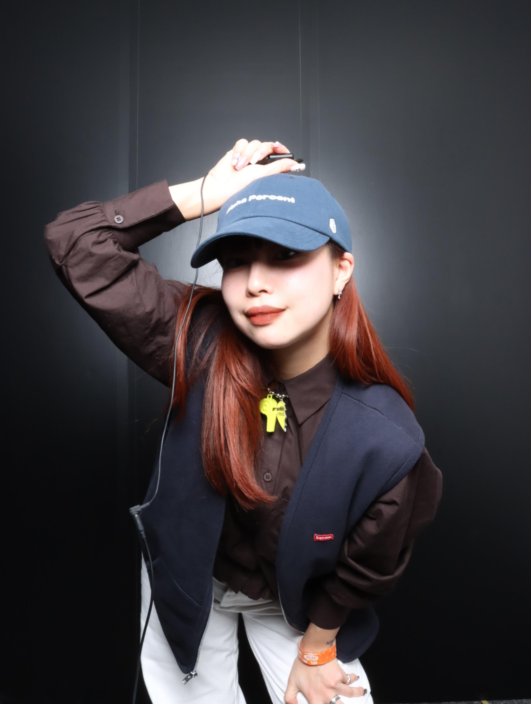
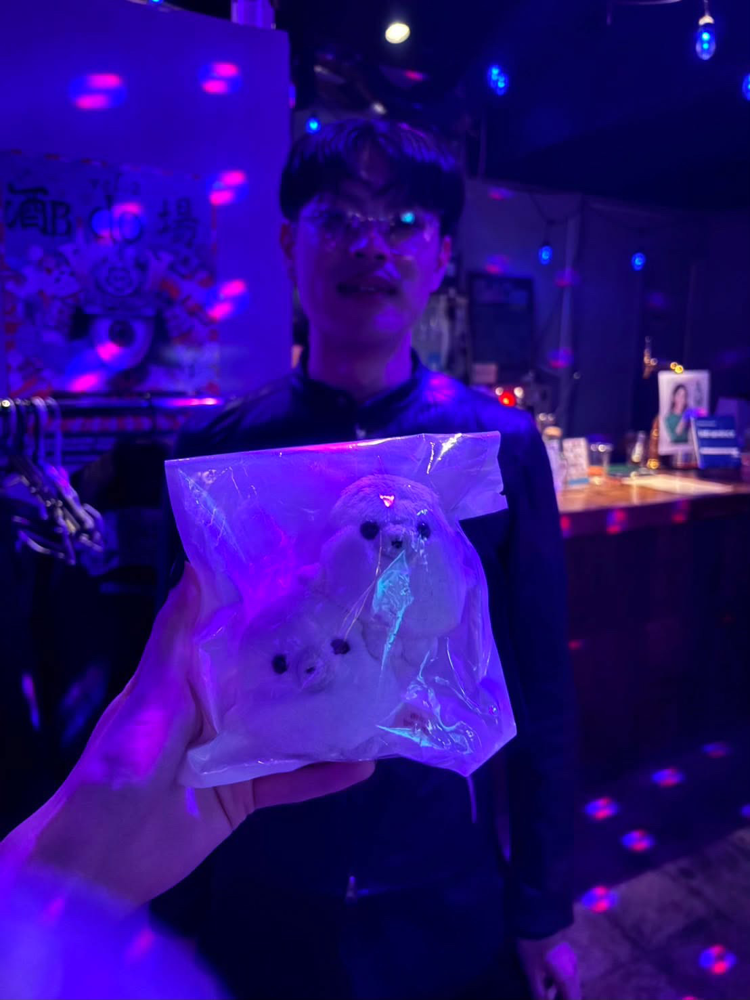
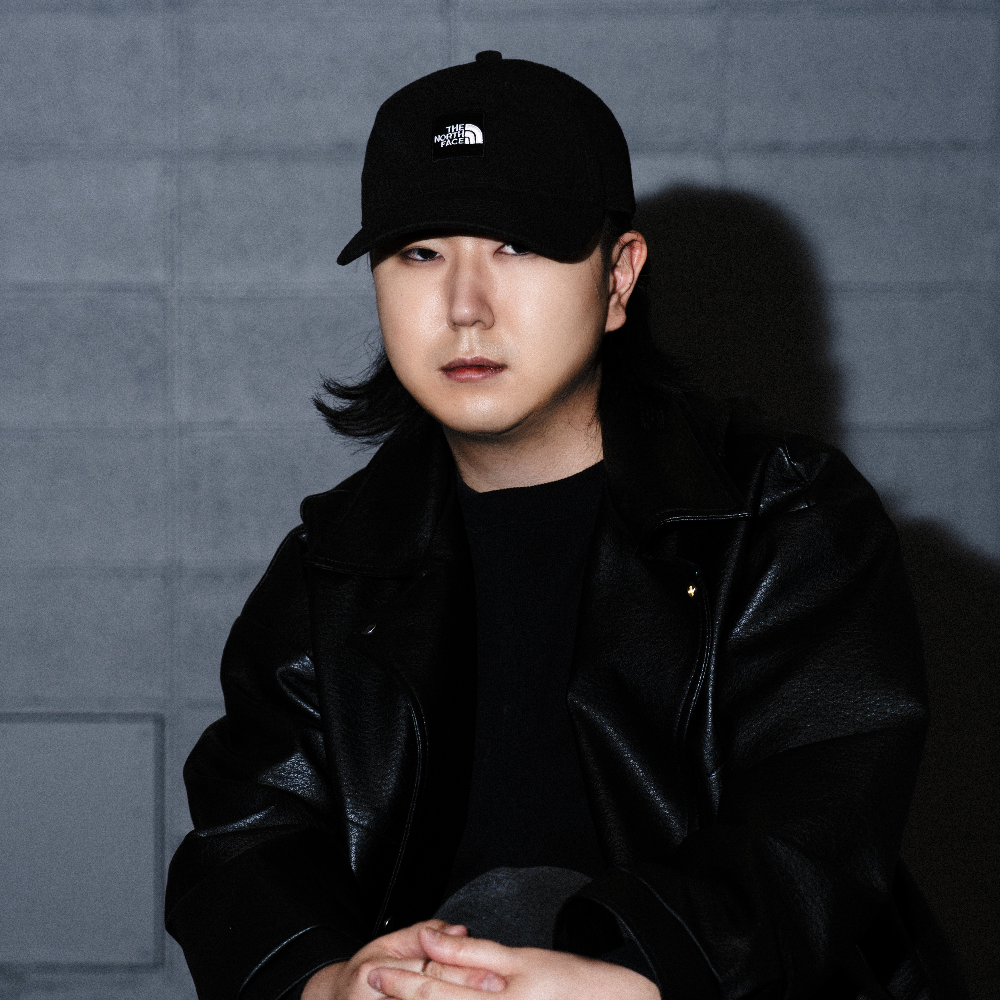

DJ、ライター、音楽プロデューサーという、それぞれ異なるバックグラウンドを持ち、現代の音楽カルチャーに不可欠な役割を担う3人が集結したクリエイティブ集団です。 イベントの企画・運営からPRまでをチーム内で行うだけでなく、自らも楽曲を制作・リリースするアーティストとして活動しています。 個々の専門性を1つのチームに集結させることで、それぞれの専門分野を活かし、独自の視点を持った音楽体験とクリエイティブを発信しています。

2012年よりDJのキャリアをスタート。国内外のポップミュージックをベースにプレイし、韓国・タイなどグローバルに活動する。

2023年に雑誌『ユリイカ』に評論「K-POPガールズグループにおけるラッパーの系譜――連鎖し、伝播するシスターフッド」を寄稿し文筆家デビュー。以降、韓国アーティストへのインタビューやアーティスト紹介コラム、ライブレポート、また韓国アーティストの新曲発表に合わせたプレスリリースの作成と配信協力などを継続的に行っている。

2016年より音楽レーベル立ち上げ・楽曲制作を開始し、ゲーム音楽からPOPSまで幅広く手掛け、現在は会社でも正社員で音楽プロデューサーをしている。2019年にはDJ活動を開始し、国内外での出演やイベントオーガナイズを展開。広告代理店で培ったクリエイティブ・マーケティングの知見を活かしたサポートも行う。
DJ, 라이터, 음악 프로듀서라는 각각 다른 배경을 가지고 현대 음악 문화에 없어서는 안 될 역할을 수행하는 세 사람이 모인 크리에이티브 집단입니다. 이벤트 기획·운영부터 PR까지 팀 내에서만 하는 것이 아니라, 직접 곡을 제작·발매하는 아티스트로도 활동하고 있습니다. 각자의 전문성을 하나의 팀에 모아 각각의 전문 분야를 살리고, 독자적인 시각을 가진 음악 체험과 크리에이티브를 발신하고 있습니다.
2012년부터 DJ 경력을 시작. 국내외 팝 음악을 기반으로 연주하며, 한국·태국 등 글로벌 무대에서 활동한다.
2023년에 잡지 『유리이카(ユリイカ)』에 평론 「K-POP 걸그룹에 있어서 래퍼의 계보――연쇄하고 전파하는 시스터후드」를 기고하며 문필가로 데뷔했다. 이후 한국 아티스트 인터뷰와 아티스트 소개 칼럼, 라이브 리포트, 또 한국 아티스트의 신곡 발표에 맞춘 보도자료 작성과 배포 협력 등을 지속적으로 하고 있다.
2016년부터 음악 레이블 설립과 곡 제작을 시작해 게임 음악부터 POPS까지 폭넓게 다뤘으며, 현재는 회사에서도 정규직으로 음악 프로듀서로 일하고 있다. 2019년에는 DJ 활동을 시작해 국내외에서 공연과 이벤트 기획을 전개. 광고 대행사에서 쌓은 크리에이티브·마케팅 노하우를 활용한 지원도 제공한다.
A creative collective brought together by three individuals with distinct backgrounds as a DJ, writer, and music producer, who play indispensable roles in contemporary music culture. Not only do we handle everything from planning and managing events to PR within our team, but also work as artists who create and release our own music. By bringing together individual expertise into a single team, we leverage each person's area of specialization to deliver music experiences and creativity from a unique perspective.
Started her DJ career in 2012. Performs based on pop music from both Japan and abroad, and is active globally in countries such as South Korea and Thailand.
In 2023, he made his debut as a writer by contributing an essay to the magazine "Eureka" titled "The Rapper Lineage in K-POP Girl Groups: Chaining and Spreading Sisterhood." Since then, he has continued to work on interviews with Korean artists, columns introducing artists, live reports, and the creation and distribution of press releases timed with the release of new songs by Korean artists.
Since 2016, he has been running a music label and producing songs, working across a wide range of genres from game music to pop, and now is also a full-time music producer at his company. In 2019, he began his DJ career, performing both domestically and internationally, and organizing events. He also provides support leveraging the creative and marketing expertise developed at an advertising agency.
リリース情報準備中
イベント情報準備中
お問い合わせ・ご依頼は、以下のメールアドレスまでご連絡ください。
annyonghaseyofakeseoulimnida@gmail.com
※ご連絡の際は、【お名前】と【ご要件】を必ずご明記いただけますようお願いいたします。
문의 및 의뢰는 아래 이메일 주소로 연락해 주시기 바랍니다.
annyonghaseyofakeseoulimnida@gmail.com
※문의 시 【성함】과 【문의 내용】을 반드시 기재해 주시기 바랍니다.
For inquiries and business opportunities, please contact us at the following email address:
annyonghaseyofakeseoulimnida@gmail.com
*Please be sure to include your [Name] and [Details of Inquiry] in your message.